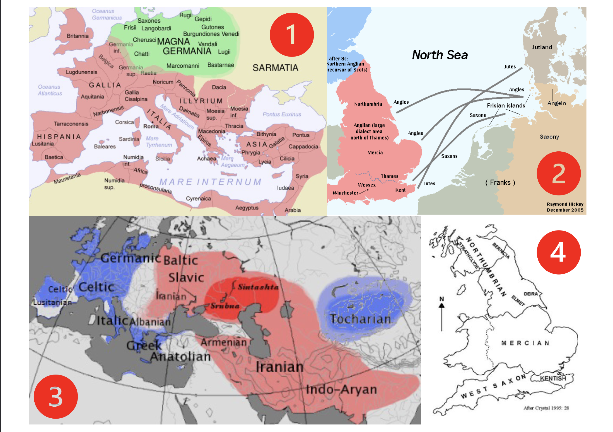
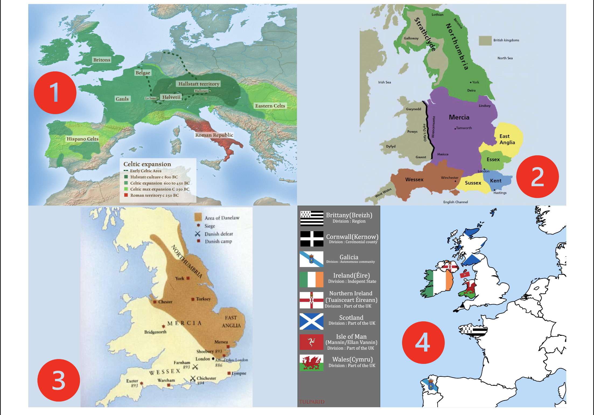
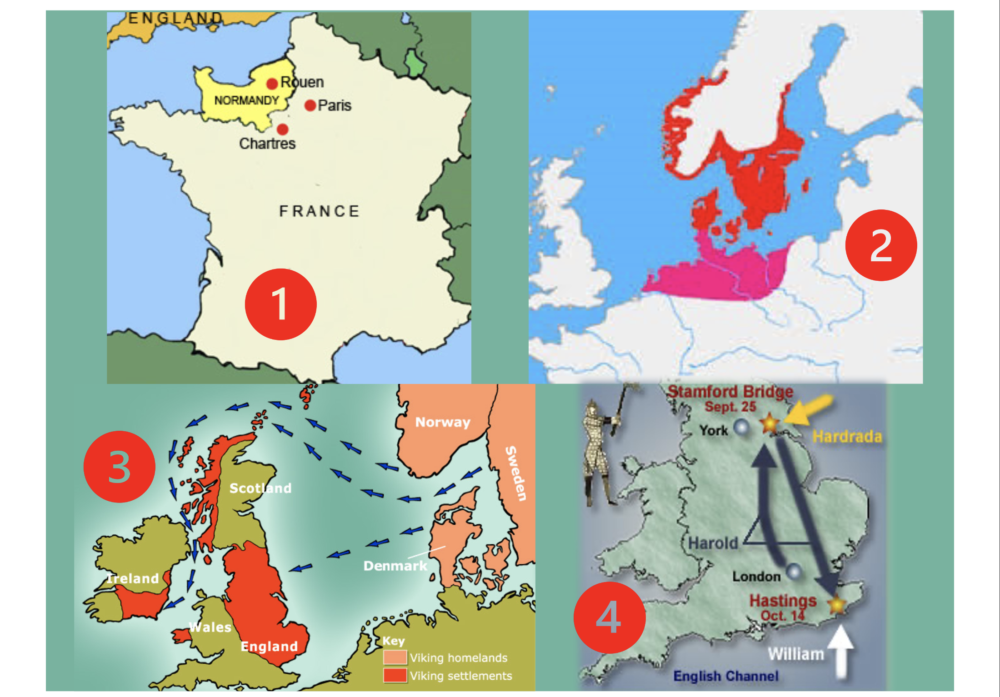
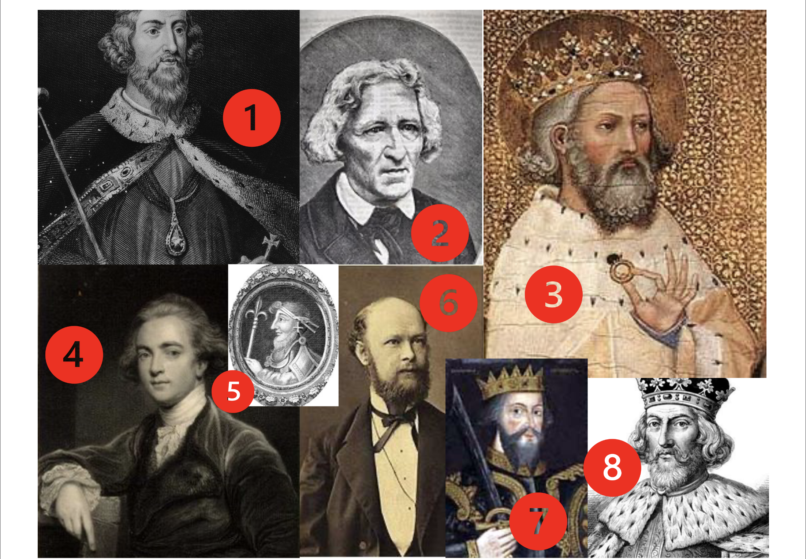

From Proto-Indo-European to Early Modern English · All major concepts, laws, and exam traps
Anglo-Saxon settlement. Synthetic, heavily inflected language. West Germanic base vocabulary, few loanwords.
Norman Conquest 1066. Massive French influence. Shift toward analytic structures; loss of grammatical gender.
Printing press (Caxton 1476). Great Vowel Shift. Renaissance loanwords. Shakespeare.
Standardisation, grammar books, dictionaries. Analytic language fully established.

The exam question (Q43) asks which periods are correct. Note: Old English = 500–1150 (or c. 450–1100); Early Modern English = 1500–1750 (NOT 1750–1900); Late Modern English = 18th & 19th century. Middle English = 1066–1500.

| Tribe | Origin | Settlement Area | Dialect |
|---|---|---|---|
| Jutes | Jutland (Denmark) | Kent, Isle of Wight (south-east) | Kentish |
| Saxons | Lower Saxony (N. Germany) | South of the Thames (south-west) | West Saxon |
| Angles | South Jutland Peninsula | Centre & North (Midlands + North) | Mercian & Northumbrian |
The Saxons settled in the south (not south-west alone) and spoke West Saxon. The Jutes went to Kent (south-east), not the West-Midlands. Frisians also came but had no distinct dialect area recorded.

When the Germanic tribes invaded Britain they found it already inhabited by Celts ✓ and Picts ✓. The Romans had already left (410 AD). Scandinavians had not yet arrived.

Describes regular consonant changes from Proto-Indo-European to Proto-Germanic. Three rules cascade into each other.
*p→*f, *t→*θ, *k→*x/h*b→*p, *d→*t, *g→*k*bʰ→b, *dʰ→d, *gʰ→gGrimm's Law is the First Germanic Sound Shift. It describes changes to consonants (stops/fricatives), NOT vowels, NOT tense/aspect. It applies to all Germanic languages, not just High German (that's the Second Germanic / High German Sound Shift). Grimm's Law does NOT explain exceptions — Verner's Law does.
Karl Verner (1875) showed the apparent exceptions to Grimm follow a rule: voiceless fricatives f, θ, x, s → voiced v, ð, ɣ, z, when all three conditions hold simultaneously:
Classic example: "father"
PIE *pətḗr (stress on 2nd syllable) → Gmc *faþér → Verner: *faðer → *fáder → OE fæder.
In brōþir ("brother") stress was on the first syllable → þ preserved.
Secondary effect: voiced *z → r (rhotacism). Traces: was–were, lose–forlorn.
✓ Verner's Law explains exceptions to Grimm's Law.
✓ Grimm's Law: *p→*f, *b→*p, *bh→*b (Rule 1/2/3 in that order).
✓ Preceding syllable must be unstressed for voicing to occur.
A regressive assimilation: a vowel changes when /i/ or /j/ follows in the next syllable. Back vowels move forward; low front vowels are raised. The triggering /i/ or /j/ usually disappeared afterwards — making the alternation look unexplained today.
I-mutation took place in pre-Old English (reconstructed OE), NOT Middle English. It is a movement to a closer and/or more frontal vowel. It does NOT explain sing–sang (that's ablaut). The irregular plural mice is due to i-mutation, not analogy or Old Norse.
Inherited from PIE: alternation of the stem vowel in strong verbs to indicate past tense and participle. There are 7 ablaut classes in OE.
| Class | Infinitive | Past sg. | Past pl. | Participle |
|---|---|---|---|---|
| I | wrītan | wrāt | writon | gewriten |
| II | frēosan | frēas | fruron | gefroren |
| III | helpan | healp | hulpon | geholpen |
| IV | beran | bær | bǣron | geboren |
| V | etan | æt | ǣton | geeten |
| VI | faran | fōr | fōron | gefaren |
| VII | healdan | hēold | hēoldon | gehealden |
ModE traces: write–wrote, help–helped (now weak), bear–bore.
Ablaut is the stem-vowel alternation in strong verbs. It did NOT develop in ME; it is inherited from PIE. Option (d) "movement to closer/frontal vowel" describes i-mutation (umlaut), not ablaut.
A change in the quality of all long vowels only (NOT short vowels, NOT quantity). High long vowels became diphthongs; lower long vowels were raised.
/iː/ → /aɪ/: tyme → time/uː/ → /aʊ/: hous → house/eː/ → /iː/: mete → meet/oː/ → /uː/: mone → moonThe GVS affected long vowels only (option b ✓). It changed pronunciation, not spelling — causing the gap we still see today. It did NOT change the quantity of vowels (option d ✗).
In OE, only the voiceless versions were phonemic. Voiced variants [v], [z], [ð] were allophones (position-dependent). No minimal pairs like ModE feel–veal existed in OE.
Next to front vowels: /k/ → [tʃ], /g/ → [j]. ModE: chin, church (OE /k/) vs. kid, get (Norse, no palatalisation). Explains chin/Kinn and yellow/gelb.
OE palatalised sk → [ʃ]: scip → ship. Old Norse did NOT. Test: hard sk = Scandinavian loanword (sky, skin, skill, skirt); ModE sh = native OE (ship, shall, fish).
A front rounded vowel, existed in OE. Did NOT survive into Standard Modern English (Q56 ✓). In early ME dialects it was often spelled ⟨u⟩; later unrounded and merged with i or e.
Lengthening occurred in open syllables and before homorganic consonant clusters (-mb, -nd, -ld, -ng, -rd).
Shortening occurred in closed syllables and in the first syllable of three-syllable words.
Loss of /y/: Unrounding → merger with /i/ or /e/: fyllan → fill.
Loss of unstressed finals: apocope (final vowels lost: cynge); syncope (medial vowels: pilgrimes).
The central narrative of English grammar history is a slow movement from a synthetic (heavily inflected) structure in OE to a predominantly analytic structure in Modern English — driven by both internal factors (Verner's Law aftermath, stress patterns, functional load) and external contact (Old Norse, Norman French).
| Feature | Synthetic (OE) | Analytic (ModE) |
|---|---|---|
| Grammatical relations expressed by… | Inflectional endings on words | Word order, prepositions, function words |
| Word order | Relatively free (SVO, SOV, VSO all possible) | Fixed (SVO dominant) |
| Adjective agreement | Yes: case, number, gender | No |
| Noun cases | 4 cases (Nom., Gen., Dat., Acc.) | Only genitive -s + pronouns |
| Grammatical gender | 3 (m., f., n.) — grammatical, not natural | Natural gender only (he/she/it) |
| Tenses via inflection | Present & past only | Periphrastic (will have praised) |
| Multiple negation | Normal & emphatic | Non-standard (prescriptively wrong) |
Old English is called synthetic because it has many inflections and a relatively free word order (option b). NOT because it has many free morphemes or function words.
OE nouns inflected for: case (Nom./Gen./Dat./Acc.), number (sg./pl.), grammatical gender (m./f./n.). Multiple declension types existed.
Example: stān "stone" (strong masculine noun)
| Case | Singular | Plural |
|---|---|---|
| Nominative | stān | stānas |
| Genitive | stānes | stāna |
| Dative | stāne | stānum |
| Accusative | stān | stānas |
OE noun inflections indicate number ✓ and case ✓. NOT person (that's verb inflection) and NOT mood (also verb inflection).
Used without a definite article. Inherited from PIE.
Example: gōd mann ("a good man")
Inflected for case, number, gender.
Used after a definite article/demonstrative. An innovation in Germanic.
Example: se gōda mann ("the good man")
Also inflected for case, number, gender but with reduced distinctions.
The weak adjective declension is used when there is a definite article ✓. It is also called the definite declension (NOT the indefinite one — that's the strong). The dental suffix marks weak verbs, not adjectives.
Inherited from PIE. Form past tense by ablaut (vowel change). 7 classes. Productive in PG/OE, unproductive later; many became "irregular" in ModE.
Inflected for: person, number, mood (indicative/subjunctive/imperative), tense (present/past).
Germanic innovation. Form past by adding a dental suffix (-ed, -od, -d, -t). Always productive; became the "regular" type in ModE.
Example: lufian – lufode – gelufod
Present forms derive from old PIE past forms → semantically reinterpreted as present. Then needed a new weak past. Source of modern modal auxiliaries: can/could, shall/should, may/might, must, ought.
No -s in 3rd person sg; no infinitive (*to can).
OE past tense was expressed by ablaut (strong verbs) ✓ and dental suffix (weak verbs) ✓. The modern modal auxiliaries derive from OE preterite-present verbs ✓ (not strong, weak, or impersonal verbs).
| Category | Change in ME |
|---|---|
| Person & number marking | Weakened (fewer distinct endings) |
| Tense | Strengthened (new analytic forms: future, perfect, progressive) |
| Mood | Weakened (modal verbs take over subjunctive functions) |
| Past marking | Became more regular (weak -ed dominant) |
| Grammatical gender | Lost → natural gender |
| 3rd person plural pronouns | Borrowed from Old Norse: they, their, them |
In EME, periphrastic do rose rapidly in questions, negations, and even affirmative declarative sentences. It was not yet grammatically restricted as in ModE.
Multiple negation was standard in OE ("they never had no enemy" = emphatic: "they never had an enemy"). In EME it became increasingly non-standard, eventually condemned by prescriptive grammar.
| Layer | Period | Type | Example Words |
|---|---|---|---|
| Celtic | Pre-OE | Substratum | Place names: Avon, Thames, Kent, Devon, cumb; very few common words |
| Latin (Continental) | Pre-OE (on mainland) | Superstratum | mīl, strǣt, weall, wīn, butere, cēap |
| Latin (Settlement) | OE (via Celts) | Superstratum | Place names: -ceaster (Winchester, Chester, Lancaster) |
| Latin (Christianisation) | OE from 597 | Superstratum | mynster, mæsse, munuc, nunne, biscop, apostol |
| Old Norse | OE/ME (Viking, 787–1042) | Adstratum | they, their, them, are, till; sky, skin, skill, egg, cake, anger, bag, low, get, give |
| Anglo-Norman French | ME (1066–1250) | Superstratum | baron, duke, servant, government, judge, prayer, saint, story |
| Central French | ME (1250–1400) | Superstratum | parliament, crime, army, battle, dance, music, beef, veal, pork, venison |
| Latin & Greek (Renaissance) | EME | Superstratum | focus, vacuum, circus, cosmos, skeleton; inkhorn terms |
| Other (Spanish, Italian, Dutch…) | EME–ModE | Various | Sp: cannibal, potato, armada; It: opera, fresco; Du: yacht, dock |
OE vocabulary was ~98% West Germanic. It was consociated — large word families built from native material. New words formed through compounding (bōccræft "literature") and derivation (prefixes ge-, ā-, un-; suffixes -dōm, -ere, -scipe).
Special poetic compounds: kennings — hronrād ("whale-road") = sea; banhūs ("bone-house") = body.
Words grouped into large word families with visible morphological connections. lār → læran, lārhūs, lārēow, lārdōm.
Many words isolated in the lexicon with no transparent connection to semantically related words. cow vs. beef (same animal, two unrelated words from two languages).
A dissociated vocabulary has many words that show no formal resemblance with semantically related words (option c ✓) and words that are isolated in the lexicon (option b ✓). Modern English has a MORE dissociated vocabulary than OE.
Words of the same or similar meaning from two different source languages. Not economical → one often disappears or semantic differentiation occurs.
Examples of doublets:
| Test | OE/Native (→ ModE) | Old Norse/Scandinavian (→ ModE) |
|---|---|---|
| sk vs. sh | ship, shall, fish, shell (sh) | sky, skin, skill, skirt, bask (sk) |
| k vs. ch | chin, church (ch) | kid, get, give, egg (k/g) |
| Place names | -ton, -ham, -wick | -by (Grimsby), -thorpe, -toft, -thwaite |
| Function words | they (originally OE forms fell out) | they, their, them, till, are, though |
Pompous Latinate/Greek words used in EME although perfectly good English equivalents already existed. Criticised as pedantic and unnecessarily obscure. Introduced mainly via scientific books and translations from Latin.
A manifestation of English nationalism in EME. Attacked excessive borrowing; advocated native word formation. Opposed inkhorn terms and foreign loanwords like affirmation or conclusion.
Purists attacked loan-words (not native coinages) and opposed words like affirmation, conclusion (Latin). Option (a) ✓ nationalism.
The earliest monolingual English dictionaries (option c ✓). Written in EME to explain difficult (hard) words to less educated readers (option a ✓). First example: Robert Cawdrey's Table Alphabeticall (1604). They did NOT aim to list all English words — that was a later goal.
A classic cultural pattern from the Norman Conquest: the English tended the animals, the Normans ate the prepared food.
| Living Animal (OE) | Cooked Dish (French) |
|---|---|
| ox | beef (Fr. bœuf) |
| sheep | mutton (Fr. mouton) |
| calf | veal (Fr. veau) |
| pig | pork (Fr. porc) |
| deer | venison (Fr. venaison) |
Click each question to reveal the correct answer(s) and explanation.
When: Pre-Old English (reconstructed, prehistoric OE phase). Also in other West and North Germanic languages, but not in East Germanic Gothic.
What happened: A regressive assimilation. When /i/ or /j/ followed in the next syllable, the vowel of the stressed syllable was pulled forward/upward — back vowels became front vowels, low front vowels were raised. The triggering /i/ or /j/ subsequently disappeared, making the alternation appear irregular today.
Effects on OE grammar: Created alternations in noun plurals, verb forms, and derived word pairs. Examples: fōt–fēt, mūs–mȳs, mann–menn, tōþ–tēþ; word pairs like long–length, talu–tellan.
Survival into ModE: The irregular plurals foot–feet, mouse–mice, man–men, tooth–teeth, goose–geese, louse–lice. Also related word pairs: full–fill, strong–strength, old–elder.
Synthetic structure: OE expressed grammatical relations (who does what to whom) via inflectional endings on nouns, adjectives, articles, and pronouns — not via word order. Word order was therefore relatively free (SVO, SOV, VSO all occurred).
OE noun morphology distinguished: case (Nom./Gen./Dat./Acc.), number (sg./pl.), grammatical gender (m./f./n.). Multiple declension classes existed (strong/weak, a-stems, i-stems, etc.). Articles and adjectives also inflected to agree in case, number, and gender.
Difference from ModE: ModE nouns mark only number (-s plural) and genitive (-'s). No grammatical gender. No case distinctions on nouns (only on pronouns: I–me, he–him). Adjectives are uninflected. Articles are invariable.
Categories expressed by inflection in OE: Nouns → case, number, gender. Adjectives → case, number, gender (strong/weak). Articles/demonstratives → case, number, gender. Pronouns → case, number, gender, person. Verbs → person, number, mood, tense.
English and High German are both members of the Indo-European language family, specifically the Germanic branch, and more specifically both belong to West Germanic.
However, they diverge within West Germanic: English descends from North-Sea Germanic (Ingvaeonic) → Anglo-Frisian → Old English. High German descends from the southern (Erminonic) branch of West Germanic and underwent the Second Germanic (High German) Sound Shift (which English did NOT undergo: Ger. machen vs. Eng. make; Ger. Wasser vs. Eng. water).
So: English and High German are sibling languages within West Germanic — they share a common ancestor (West Germanic) but diverged and developed independently, with High German undergoing additional consonant changes that English did not.
Key terms for the History of English exam — defined precisely.
Click any card to flip it and reveal the answer.